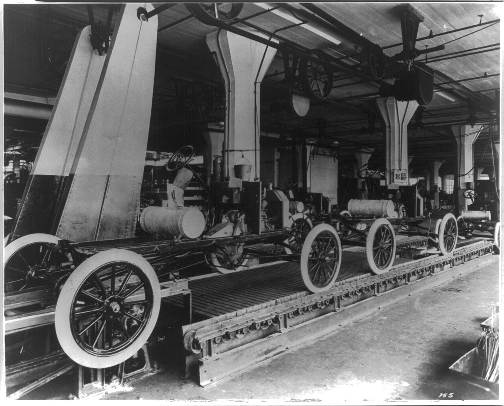

Directions: Study the photograph and the advertisement lines, then answer the questions.

Background. Ford introduced the moving assembly line at Highland Park in 1913. Chassis labor fell from about twelve and a half hours to about an hour and a half by the spring of 1914. The Model T touring car fell in price from about $850 in 1909 to about $360 in 1916, and the runabout reached $260 in 1925.
Advertisement lines. From a newspaper advertisement for the Frigidaire electric refrigerator, 1922: the headline reads No More Ice, and a line in the advertisement reads A Home Is No Longer Modern Without Frigidaire. The cheapest Frigidaire model listed cost $195.
1. What details in the photograph show a moving assembly line at work, rather than a crew building one car where it stands?
2. A buyer in 1909 paid about $850 for a touring car. A buyer in 1916 paid about $360 for the same model. Explain, in one or two sentences, what had happened inside the factory to make that price possible.
3. The Frigidaire line tells the reader that a home without the machine is no longer modern. What is the advertisement selling in that line, beyond a refrigerator?
4. A family in 1925 wants the $195 refrigerator and the $260 runabout and can pay cash for neither. Name the buying method the lesson describes for this family, and state one benefit and one risk of that method for the family.
1. What details in the photograph show a moving assembly line at work? A row of chassis at the same stage of completion sits on a continuous track or conveyor that carries them through the plant, with drive machinery and belts overhead and work stations arranged along the line. Several identical cars are in progress at once at successive positions, which is the opposite of one crew gathered around a single stationary car. Students should cite the line of chassis on the track and the repeated stations. (Blueprint 1)
2. What had happened inside the factory to make the 1916 price possible? The moving assembly line and interchangeable parts cut the labor in a chassis from about twelve and a half hours to about an hour and a half, so the cost of building each car fell and Ford cut the price as output rose. Credit requires the productivity gain and the link from lower unit cost to lower price. (Blueprint 1)
3. What is the advertisement selling beyond a refrigerator? Modern status. The line defines a modern home by ownership of the machine and presents the family without one as behind the times. The refrigerator is sold as proof that the household is current, clean, and respectable, not only as a box that keeps food cold. (Blueprint 2)
4. Name the buying method, with one benefit and one risk. Installment buying. Benefit: the family pays part of the price down and takes both goods home at once, spreading the rest across weekly or monthly payments that fit a wage income. Risk: the family commits future wages before earning them, pays interest or a carrying charge above the cash price, and loses the goods to repossession if payments fall behind. (Blueprint 2)
Teacher note. This check is formative. Question 1 is the observation diagnostic. Students who describe only a factory have not yet read a photograph for the process it shows. Question 4 predicts success on the writing task, because it requires the consumption side of the same system the essay asks students to explain.